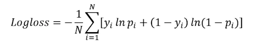

library(tidyverse)
diabetes_data <- read_csv("diabetes_binary_health_indicators_BRFSS2015.csv")
diabetes_data$Diabetes_binary <- factor(diabetes_data$Diabetes_binary, levels = c(0, 1), labels = c("no_diabetes", "diabetes"))
diabetes_data$HighBP <- factor(diabetes_data$HighBP, levels = c(0, 1), labels = c("no_hbp", "hbp"))
diabetes_data$HighChol <- factor(diabetes_data$HighChol, levels = c(0, 1), labels = c("no_high_chol", "high_chol"))
diabetes_data$CholCheck <- factor(diabetes_data$CholCheck, levels = c(0, 1), labels = c("no_chol_check", "chol_check"))
diabetes_data$Smoker <- factor(diabetes_data$Smoker, levels = c(0, 1), labels = c("non_smoker", "smoker"))
diabetes_data$Stroke <- factor(diabetes_data$Stroke, levels = c(0, 1), labels = c("no_stroke", "stroke"))
diabetes_data$HeartDiseaseorAttack <- factor(diabetes_data$HeartDiseaseorAttack, levels = c(0, 1), labels = c("no_hd_or_attack", "hd_or_attack"))
diabetes_data$PhysActivity <- factor(diabetes_data$PhysActivity, levels = c(0, 1), labels = c("no_activity", "activity"))
diabetes_data$Fruits <- factor(diabetes_data$Fruits, levels = c(0, 1), labels = c("no_fruits", "fruits"))
diabetes_data$Veggies <- factor(diabetes_data$Veggies, levels = c(0, 1), labels = c("no_veggies", "veggies"))
diabetes_data$HvyAlcoholConsump <- factor(diabetes_data$HvyAlcoholConsump, levels = c(0, 1), labels = c("no_heavy_alc", "heavy_alc"))
diabetes_data$AnyHealthcare <- factor(diabetes_data$AnyHealthcare, levels = c(0, 1), labels = c("no_healthcare", "healthcare"))
diabetes_data$NoDocbcCost <- factor(diabetes_data$NoDocbcCost, levels = c(0, 1), labels = c("no_cost_issue", "cost_issue"))
diabetes_data$GenHlth <- factor(diabetes_data$GenHlth, levels = c(1, 2, 3, 4, 5), labels = c("excellent", "very_good", "good", "fair", "poor"))
diabetes_data$DiffWalk <- factor(diabetes_data$DiffWalk, levels = c(0, 1), labels = c("no_difficulty", "difficulty"))
diabetes_data$Sex <- factor(diabetes_data$Sex, levels = c(0, 1), labels = c("female", "male"))
diabetes_data$Age <- factor(diabetes_data$Age, levels = c(1, 2, 3, 4, 5, 6, 7, 8, 9, 10, 11, 12, 13), labels = c("18_24", "25_29", "30_34", "35_39", "40_44", "45_49", "50_54", "55_59", "60_64", "65_69", "70_74", "75_79", "80_or_more"))
diabetes_data$Education <- factor(diabetes_data$Education, levels = c(1, 2, 3, 4, 5, 6), labels = c("none", "elementary", "some_hs", "high_school", "some_college", "college_grad"))
diabetes_data$Income <- factor(diabetes_data$Income, levels = c(1, 2, 3, 4, 5, 6, 7, 8), labels = c("less_10k", "10k_15k", "15k_20k", "20k_25k", "25k_35k", "35k_50k", "50k_75k", "more_75k"))ST 558 Final Project Modeling Document
Introduction
The ultimate goal of modeling is to find the best predictive model (logistic regression, classification tree, and random forest) that can be used in the prediction of the diagnosis of Diabetes. This is beneficial because Diabetes is a very prevalent chronic disease. By using a predictive model, we could potentially provide earlier diagnosis and/or monitor patients that have a higher likelihood of developing Diabetes due to certain risk factors.
Based on the previous EDA, I have identified 5 significant predictors: High Blood Pressure, High Cholesterol, Heart Disease or Attack, General Health Rating, and Difficulty Walking. Information on the target variable and the predictor variables is below.
The Diabetes_binary column takes on 3 values: 0 for no diabetes, 1 for prediabetes or diabetes.
The HighBP column takes on 2 values: 0 for no high blood pressure and 1 for high blood pressure.
The HighChol column takes on 2 values: 0 for no high cholesterol and 1 for high cholesterol.
The HeartDiseaseorAttack column takes on 2 values: 0 if no coronary heart disease or myocardial infarction and 1 if have coronary heart disease or myocardial infarction.
The GenHlth column takes on 5 values based on rating of general health: 1 is excellent, 2 is very good, 3 good, 4 is fair, and 5 is poor.
The DiffWalk column takes on 2 values: 0 if no difficulty climbing stairs or walking and 1 if difficulty climbing stairs or walking.
logLoss
log loss is calculated using the following formula: 
When trying to classify, the model first predicts the probability of success. If the probability of success is greater than 0.5, it predicts success. If it is less than 0.5, it predicts failure. Log loss takes into account how far the predicted probability is to the true value (0 or 1). If there is a greater difference between the predicted value and the actual value, then the value of the logLoss will be higher. The log loss value for each individual observation is calculated using the formula above (what is inside the summation). Then the average of the log loss score is determined to get the overall log loss score for the model. A lower log loss score indicates a better fit. If the log loss score is 0, it shows that the predicted probabilities match the true outcomes perfectly. The values of logLoss can range from 0 to infinity. The benefits of log loss is that it not only accounts for accuracy, but also confidence in predictions. In classification, we can use the accuracy metric which is just correct predictions/total predictions. However, this does not give any information about any incorrect predictions being made. By using logloss instead, we take into account both the accuracy and the confidence in predictions.
Read in data
Split the Data
First we are going to split the data into a training and test set. We do this so that we can evaluate the model on data that wasn’t used to fit the model. This helps us not to overfit the model and make sure that the model can generalize to data it hasn’t yet seen.
library(caret)
#Set the seed at 100 for reproducibility.
set.seed(100)
#Use the createDataPartition from the caret package. Get 70% of the rows.
trainIndex <- createDataPartition(diabetes_data$Diabetes_binary, p =0.7, list = FALSE)
#Assign those 70% to the training dataset.
diabetes_train <- diabetes_data[trainIndex, ]
#Assign the rows not selected in the trainIndex (30% of data) to the test dataset.
diabetes_test <- diabetes_data[-trainIndex, ]Logistic Regression Models
A logistic regression model is a generalized linear model that has a response that is a success/failure. In this case, 0 represents “failure” which is no diabetes and 1 represents success which is diabetes or prediabetes. A logistic model uses a logit link (or log(odds)) to connect the average response with a linear function in the parameters.
Logistic Model #1
Use all chosen predictors as main effect terms.
#Set the seed for reproducibility.
set.seed(50)
#Use 5 fold cross validation. To use logLoss as a metric later, set classProbs = TRUE and summaryFunction = mnLogLoss.
trctrl <- trainControl(method = "cv",
number = 5,
classProbs = TRUE,
summaryFunction = mnLogLoss)
#Train the first logistic model using all 5 main effect terms.
#Use the training data set.
#The method is glm (generalized linear model) with family as binomial to fit logistic.
#Preprocess the data by centering and scaling.
#Use the train control above to tell the model how to train.
log_fit_1 <- train(Diabetes_binary ~ HighBP + HighChol + HeartDiseaseorAttack + GenHlth + DiffWalk,
data = diabetes_train,
method = "glm",
family = "binomial",
metric = "logLoss",
preProcess = c("center", "scale"),
trControl = trctrl)
#Print out information about the model. The logLoss was 0.3337.
log_fit_1Generalized Linear Model
177577 samples
5 predictor
2 classes: 'no_diabetes', 'diabetes'
Pre-processing: centered (8), scaled (8)
Resampling: Cross-Validated (5 fold)
Summary of sample sizes: 142062, 142061, 142062, 142061, 142062
Resampling results:
logLoss
0.3336977Logistic Model #2
#Set the seed for reproducibility.
set.seed(50)
#Use 5 fold cross validation. To use logLoss as a metric later, set classProbs = TRUE and summaryFunction = mnLogLoss.
trctrl <- trainControl(method = "cv",
number = 5,
classProbs = TRUE,
summaryFunction = mnLogLoss)
#Train the first logistic model using all 5 main effect terms and an interaction between High Blood Pressure & High Cholesterol.
#Use the training data set.
#The method is glm (generalized linear model) with family as binomial to fit logistic.
#Preprocess the data by centering and scaling.
#Use the train control above to tell the model how to train.
log_fit_2 <- train(Diabetes_binary ~ HighBP*HighChol + HeartDiseaseorAttack + GenHlth + DiffWalk,
data = diabetes_train,
method = "glm",
family = "binomial",
metric = "logLoss",
preProcess = c("center", "scale"),
trControl = trctrl)
#Print out information about the model. The logLoss was 0.3336.
log_fit_2Generalized Linear Model
177577 samples
5 predictor
2 classes: 'no_diabetes', 'diabetes'
Pre-processing: centered (9), scaled (9)
Resampling: Cross-Validated (5 fold)
Summary of sample sizes: 142062, 142061, 142062, 142061, 142062
Resampling results:
logLoss
0.3336023Logistic Model #3
#Set the seed for reproducibility.
set.seed(50)
#Use 5 fold cross validation. To use logLoss as a metric later, set classProbs = TRUE and summaryFunction = mnLogLoss.
trctrl <- trainControl(method = "cv",
number = 5,
classProbs = TRUE,
summaryFunction = mnLogLoss)
#Train the first logistic model using all 5 main effect terms and interaction terms between High Cholesterol and Heart Disease/Attack and an interaction between General Health and Difficulty Walking.
#Use the training data set.
#The method is glm (generalized linear model) with family as binomial to fit logistic.
#Preprocess the data by centering and scaling.
#Use the train control above to tell the model how to train.
log_fit_3 <- train(Diabetes_binary ~ HighBP + HighChol*HeartDiseaseorAttack + GenHlth*DiffWalk,
data = diabetes_train,
method = "glm",
family = "binomial",
metric = "logLoss",
preProcess = c("center", "scale"),
trControl = trctrl)
#Print out information about the model. The logLoss was 0.3327.
log_fit_3Generalized Linear Model
177577 samples
5 predictor
2 classes: 'no_diabetes', 'diabetes'
Pre-processing: centered (13), scaled (13)
Resampling: Cross-Validated (5 fold)
Summary of sample sizes: 142062, 142061, 142062, 142061, 142062
Resampling results:
logLoss
0.3327473Best Logistic Model
Based on the three previous logistic models, Logistic Model #3 appears to be the best with the lowest logloss metric (0.3327) on the training set.
Classification Tree
A classification tree is the idea of splitting up the predictor space into regions and having different predictions for each region. For a classification tree specifically, the goal is to predict group membership - no diabetes, or prediabetes/diabetes in this case. We will use the most prevalent class to predict. This method is very easy to understand, we don’t need to include interaction terms, we don’t need to scale, and we don’t need to utilize statistical assumptions.
#Set seed for reproducibility.
set.seed(50)
#Use 5 fold cross validation. To use logLoss as a metric later, set classProbs = TRUE and summaryFunction = mnLogLoss.
trctrl <- trainControl(method = "cv",
number = 5,
classProbs = TRUE,
summaryFunction = mnLogLoss)
#Create the tuneGrid by making a dataframe of the cp parameter that starts at 0, goes to 0.1 and counts by 0.001.
tune_parameter <- data.frame(cp = seq(0, 0.1, by = 0.001))
#Create a classification tree using predictors of HighBP, HighChol, Heart Disease or Attack, General Health Rating, and Difficulty Walking to predict the presence of diabetes.
#Use rpart for the method.
#Use the train control defined above (5 fold cross validation) and the tuneGrid defined above.
class_tree_diabetes <- train(Diabetes_binary ~ HighBP + HighChol + HeartDiseaseorAttack + GenHlth + DiffWalk,
data = diabetes_train,
method = "rpart",
metric = "logLoss",
trControl = trctrl,
tuneGrid = tune_parameter)
#Print out information about the model. The optimal model has a logLoss of 0.3602.
class_tree_diabetesCART
177577 samples
5 predictor
2 classes: 'no_diabetes', 'diabetes'
No pre-processing
Resampling: Cross-Validated (5 fold)
Summary of sample sizes: 142062, 142061, 142062, 142061, 142062
Resampling results across tuning parameters:
cp logLoss
0.000 0.3602483
0.001 0.3692773
0.002 0.4037576
0.003 0.4037576
0.004 0.4037576
0.005 0.4037576
0.006 0.4037576
0.007 0.4037576
0.008 0.4037576
0.009 0.4037576
0.010 0.4037576
0.011 0.4037576
0.012 0.4037576
0.013 0.4037576
0.014 0.4037576
0.015 0.4037576
0.016 0.4037576
0.017 0.4037576
0.018 0.4037576
0.019 0.4037576
0.020 0.4037576
0.021 0.4037576
0.022 0.4037576
0.023 0.4037576
0.024 0.4037576
0.025 0.4037576
0.026 0.4037576
0.027 0.4037576
0.028 0.4037576
0.029 0.4037576
0.030 0.4037576
0.031 0.4037576
0.032 0.4037576
0.033 0.4037576
0.034 0.4037576
0.035 0.4037576
0.036 0.4037576
0.037 0.4037576
0.038 0.4037576
0.039 0.4037576
0.040 0.4037576
0.041 0.4037576
0.042 0.4037576
0.043 0.4037576
0.044 0.4037576
0.045 0.4037576
0.046 0.4037576
0.047 0.4037576
0.048 0.4037576
0.049 0.4037576
0.050 0.4037576
0.051 0.4037576
0.052 0.4037576
0.053 0.4037576
0.054 0.4037576
0.055 0.4037576
0.056 0.4037576
0.057 0.4037576
0.058 0.4037576
0.059 0.4037576
0.060 0.4037576
0.061 0.4037576
0.062 0.4037576
0.063 0.4037576
0.064 0.4037576
0.065 0.4037576
0.066 0.4037576
0.067 0.4037576
0.068 0.4037576
0.069 0.4037576
0.070 0.4037576
0.071 0.4037576
0.072 0.4037576
0.073 0.4037576
0.074 0.4037576
0.075 0.4037576
0.076 0.4037576
0.077 0.4037576
0.078 0.4037576
0.079 0.4037576
0.080 0.4037576
0.081 0.4037576
0.082 0.4037576
0.083 0.4037576
0.084 0.4037576
0.085 0.4037576
0.086 0.4037576
0.087 0.4037576
0.088 0.4037576
0.089 0.4037576
0.090 0.4037576
0.091 0.4037576
0.092 0.4037576
0.093 0.4037576
0.094 0.4037576
0.095 0.4037576
0.096 0.4037576
0.097 0.4037576
0.098 0.4037576
0.099 0.4037576
0.100 0.4037576
logLoss was used to select the optimal model using the smallest value.
The final value used for the model was cp = 0.Random Forest
A random forest extends the idea of bootstrap aggregation, but uses a random subset of predictors rather than all predictors. It can reduce the variance in comparison to a basic classification tree because you are averaging across trees.
#Set seed for reproducibility.
set.seed(50)
#Use 5 fold cross validation. To use logLoss as a metric later, set classProbs = TRUE and summaryFunction = mnLogLoss.
trctrl <- trainControl(method = "cv",
number = 5,
classProbs = TRUE,
summaryFunction = mnLogLoss)
#Create a random forest model using predictors determined by EDA.
#Use rf for the method.
#Use the train control defined above (5 fold cross validation) and the tuneGrid from 1 to 5 because there are five predictors.
rf_model_diabetes <- train(Diabetes_binary ~ HighBP + HighChol + HeartDiseaseorAttack + GenHlth + DiffWalk,
data = diabetes_train,
method = "rf",
metric = "logLoss",
trControl = trctrl,
tuneGrid = data.frame(mtry = 1:5))
#Print out information about the model. The optimal tuning parameter was
rf_model_diabetesRandom Forest
177577 samples
5 predictor
2 classes: 'no_diabetes', 'diabetes'
No pre-processing
Resampling: Cross-Validated (5 fold)
Summary of sample sizes: 142062, 142061, 142062, 142061, 142062
Resampling results across tuning parameters:
mtry logLoss
1 4.159909
2 4.093489
3 4.101530
4 4.133644
5 4.149419
logLoss was used to select the optimal model using the smallest value.
The final value used for the model was mtry = 2.Final Model Selection
We will compare all three models on the test set. Based on the test set, it appears that the logistic regression is the best model. On the test set, the logistic model has a log loss of , the classification tree has a logLoss of , and the random forest model has a logLoss of infinity.
#Logistic Model
library(Metrics)Warning: package 'Metrics' was built under R version 4.3.3
Attaching package: 'Metrics'The following objects are masked from 'package:caret':
precision, recall#Get actual values. Converts to 1 & 2 so subtract 1 to get 0 and 1.
actual <- as.numeric(diabetes_test$Diabetes_binary) - 1
#Use the best logistic model (log_fit_3) to predict the probability of success (diabetes).
predicted <- predict(log_fit_3, newdata = diabetes_test, type = "prob")
#Just get the predicted for diabetes (don't need no_diabetes).
predicted_diabetes <- predicted$diabetes
#Use logLoss function from Metrics package to compute logLoss.
logLoss(actual, predicted_diabetes)[1] 0.3333444#Classification Tree
#Get actual values. Converts to 1 & 2 so subtract 1 to get 0 and 1.
actual <- as.numeric(diabetes_test$Diabetes_binary) - 1
#Use the classification tree model (class_tree_diabetes) to predict the probability of success (diabetes).
predicted <- predict(class_tree_diabetes, newdata = diabetes_test, type = "prob")
#Just get the predicted for diabetes (don't need no_diabetes).
predicted_diabetes <- predicted$diabetes
#Use logLoss function from Metrics package to compute logLoss.
logLoss(actual, predicted_diabetes)[1] 0.360268#Random Forest
#Get actual values. Converts to 1 & 2 so subtract 1 to get 0 and 1.
actual <- as.numeric(diabetes_test$Diabetes_binary) - 1
#Use random forest model (rf_model_diabetes) to predict probability of success (diabetes).
predicted <- predict(rf_model_diabetes, newdata = diabetes_test, type = "prob")
#Just get the predicted for diabetes (don't need no_diabetes).
predicted_diabetes <- predicted$diabetes
#Use logLoss function from Metrics package to computer logLoss.
logLoss(actual, predicted_diabetes)[1] Inf